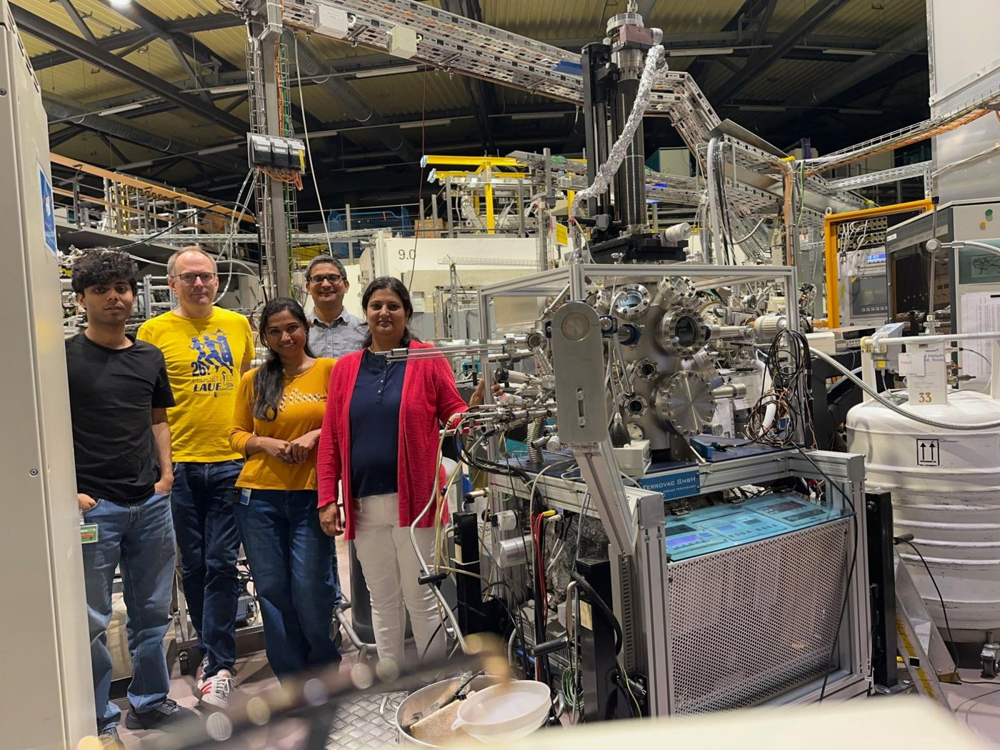

Lab for Investigating Quantum Materials, Interfaces & Devices
We investigate intrinsic physical properties of novel quantum materials such as two-dimensional materials, topological materials, and van der Waals based cross-dimensional synthetic hetero-structures. We seek to understand and exploit the interplay of twist, charge, spin and valley degrees of freedom in these systems for future device applications.

Carnegie Mellon University · LIQUID
Katoch–Singh Lab (LIQUID Group)